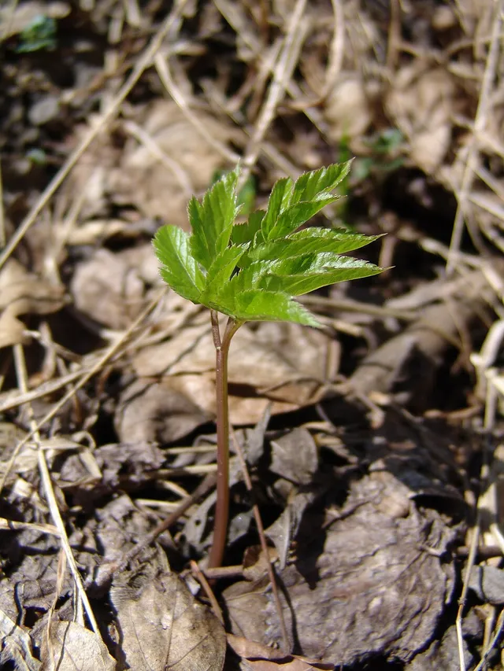

Wild plants you can forage in Norway
32 wild greens, berries, nuts, roots and flowers, with when each is in season, where it grows, how to harvest it and what to cook.
Greens
 ChickweedMay–Sep
ChickweedMay–Sep Common sorrelMay–Aug
Common sorrelMay–Aug DandelionApr–Sep
DandelionApr–Sep DulseApr–Sep
DulseApr–Sep
Ground elderMay–Jul Sea beetMay–Sep
Sea beetMay–Sep Spruce tipsMay–Jun
Spruce tipsMay–Jun Stinging nettleApr–Jul
Stinging nettleApr–Jul Sugar kelpMar–Jun
Sugar kelpMar–Jun Wild garlicApr–Jun
Wild garlicApr–Jun Wood sorrelMay–Sep
Wood sorrelMay–Sep
Fruit & berries
 BilberryJul–Sep
BilberryJul–Sep Bog cranberrySep–Oct
Bog cranberrySep–Oct CloudberryJul–Aug
CloudberryJul–Aug CrowberryAug–Sep
CrowberryAug–Sep ElderberryAug–Sep
ElderberryAug–Sep Juniper berriesSep–Nov
Juniper berriesSep–Nov LingonberryAug–Oct
LingonberryAug–Oct Rose hipsAug–Oct
Rose hipsAug–Oct Rowan berriesAug–Oct
Rowan berriesAug–Oct Sea buckthornAug–Oct
Sea buckthornAug–Oct Wild blackcurrantJul–Aug
Wild blackcurrantJul–Aug Wild raspberryJul–Aug
Wild raspberryJul–Aug Wild strawberryJun–Aug
Wild strawberryJun–Aug
 Blue musselsJan–Dec
Blue musselsJan–Dec HazelnutAug–Sep
HazelnutAug–Sep ElderflowerJun–Jul
ElderflowerJun–Jul MeadowsweetJul–Aug
MeadowsweetJul–Aug Red cloverJun–Aug
Red cloverJun–Aug Sweet woodruffMay–Jun
Sweet woodruffMay–Jun Wild thymeJun–Aug
Wild thymeJun–Aug YarrowJun–Sep
YarrowJun–Sep